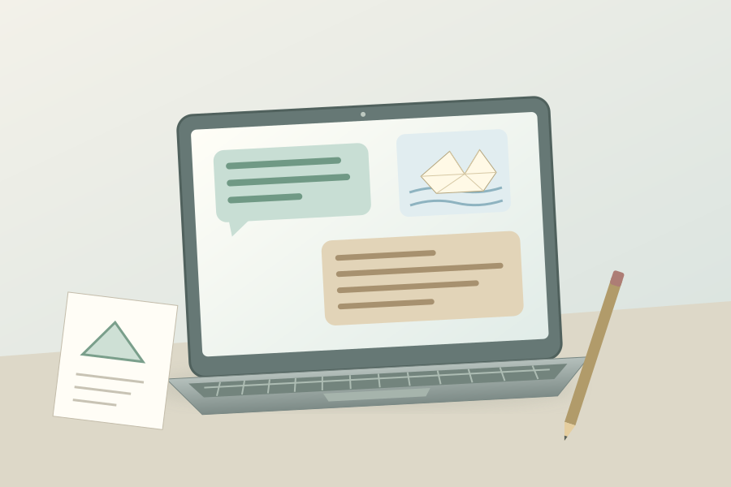

身边的科技 · 认识与判断
AI 是什么？认识一种新工具
手机里有个工具：你给它一句话，它能回话、给点子，有的还能画画或认图片。它叫 AI。它能帮忙，但说得像真的，也可能弄错。

本页只有预写的本地示例，不是真实在线 AI。没有输入框，不会发送你的问题或照片。
先看：AI 能帮什么？
给它一个任务，再看它给出的东西。不同 AI 工具能做的事并不一样。
给工具的任务
深入看：这是怎样的工具？
AI 是一类由人设计的计算机系统。这里认识的是能处理文字或图片、给出建议或内容的 AI 工具，不是所有 AI 的完整清单。一次回答并不证明它理解了整个世界，也不保证它有资料、权限或能力完成别的任务。
把任务、背景和想要的形式说清楚，通常更容易得到有用的帮助。好问题仍不能保证答案正确；它给出的内容还需要人选择、检查和修改。
AI、程序、机器人和人，是一回事吗？
选一个看看。它们可以一起工作，但角色不同。
深入看：它们会重叠吗？
会。AI 工具也由程序实现，不是程序的反面。“普通程序”在这里指按明确规则处理任务的常见例子，不是软件的严格分类。机器人有能在现实中行动的机械身体；它可能按固定程序工作，也可能使用 AI。一个没有机械身体的聊天工具同样可以是 AI。
会用“我”、会写安慰的话，不等于它和人一样有感受或承担责任。人的观察、关系、判断和照顾不能交给一个会说话的工具全部替代。
这一次，先做哪件事？
不是猜“AI 永远能不能做”，而是为眼前的任务选一个合适的起点。
说得很肯定，就能相信吗？
下面的回答全是我们写的练习。先找证据，再决定这句话能不能用。
答案可能正确、错误，也可能现在没有足够信息。拿不准时可以停下来；再问同一个工具一次，并不等于多了一份独立证据。
把工具用在合适的地方
先说任务，留住自己的判断
说清楚想要什么
“给我三个故事开头，句子短一点。”告诉它任务和形式，再挑选、修改。你还是作品的主人。
真实资料先核查
观察实物、翻可靠资料、请大人一起确认。题目重要时，不能只凭一个 AI 回答作决定。
私事不必拿出来
练习提问不需要真实姓名、家里地址、密码或同学照片。使用真实服务前，和大人一起看年龄要求与隐私设置。
人和人仍要相处
AI 可以帮你想一句问候。想知道朋友的想法，还要认真听朋友说；需要帮助时，找信任的大人。
给家长的深入说明与模型边界
本页围绕工具类别、用途与判断来建立 AI 素养，不模拟学习过程，也不把聊天式 AI 当成全部 AI。示例结果是编辑预写的教学材料，不能用来估计任何真实模型的能力、正确率或安全性；画面中也没有执行真实图像识别或图像生成。
生活任务的推荐起点由情境决定，不是“AI 可用/禁用”清单。AI 可辅助查找或整理资料，但来源仍需确认。这里不输入、不保存也不上传儿童个人资料；真实产品的数据处理和适用年龄各有规定，需要监护人核对。
参考资料
资料核对：2026 年 10 月 1 日。插图为原创教学绘图。